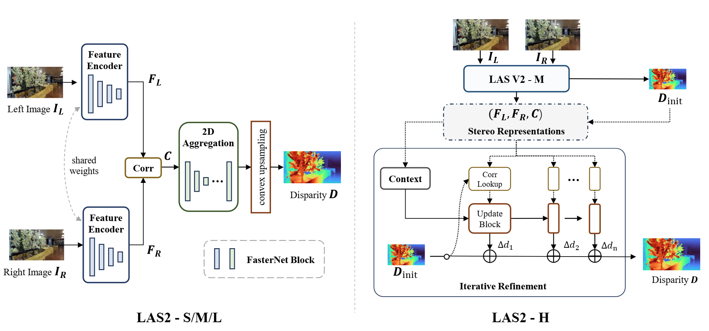
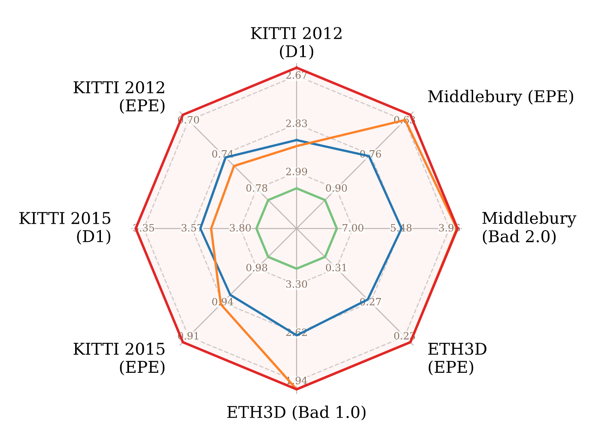
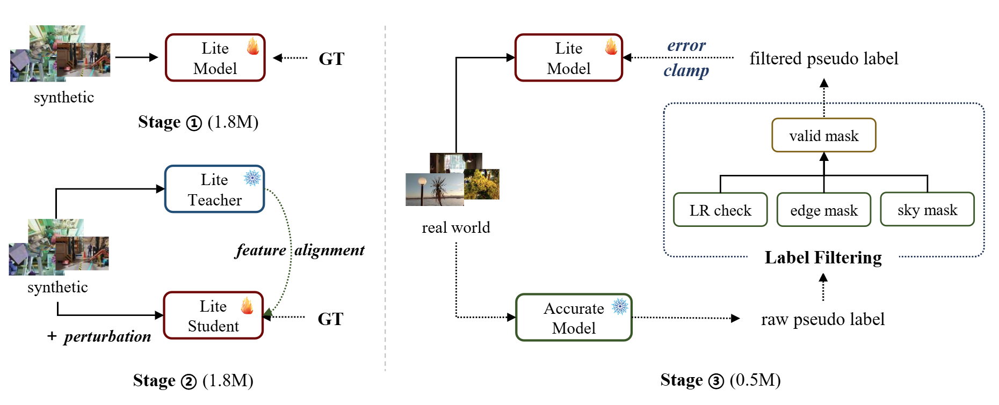
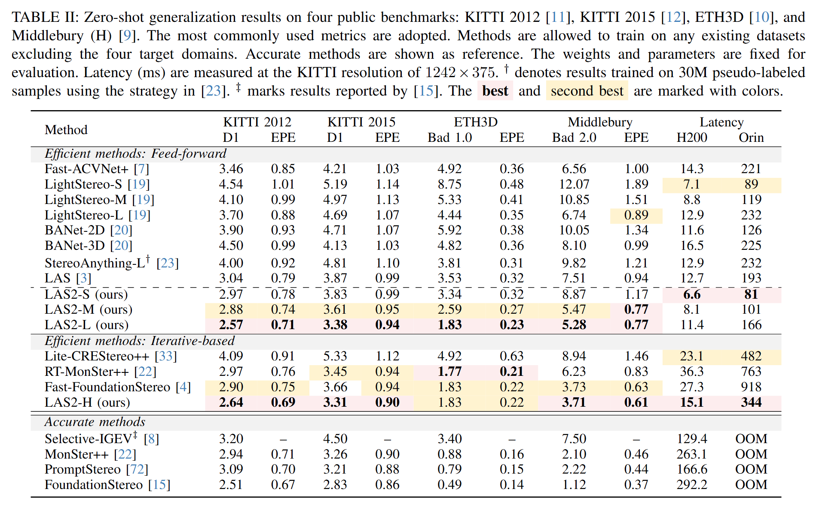
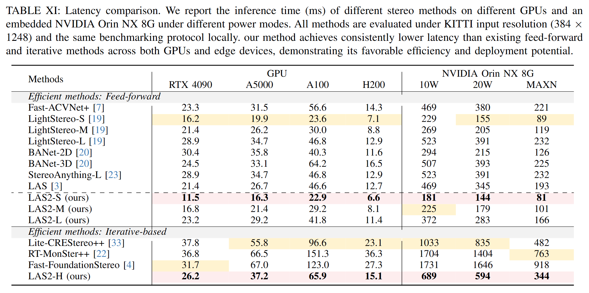
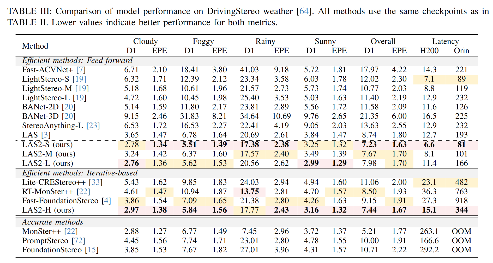

LAS2 contains an efficient feed-forward family for deployment across speed and quality targets, plus LAS2-H for iterative refinement when higher accuracy is required.

Lite Any Stereo V2 zero-shot result
Switch between efficient feed-forward stereo and iterative refinement, then inspect the input, disparity maps, and metric point clouds for each scene.
Recent advances in stereo matching have achieved remarkable accuracy, but often rely on large models, heavy computation, or additional foundation priors, making them difficult to deploy on resource-constrained platforms. In contrast, efficient stereo models offer faster inference but are commonly considered less capable of strong zero-shot generalization. In this paper, we challenge this assumption by introducing Lite Any Stereo V2 (LAS2), an ultra-fast stereo matching model series designed for efficient zero-shot stereo matching. LAS2 is developed from both architecture and training perspectives. Architecturally, we revisit efficient stereo design under practical deployment settings and propose a pure 2D cost aggregation framework, optimized for real inference latency rather than theoretical MACs alone. For training, we develop a three-stage strategy that combines synthetic supervision, self-distillation, and real-world knowledge distillation. To improve the reliability of real-world pseudo supervision, we further introduce pseudo-label filtering and an error-clamping operation, enabling smoother synthetic-to-real transfer. We instantiate LAS2 as a family of models, including feed-forward variants for different efficiency budgets and an iterative variant for higher accuracy. Extensive experiments show that LAS2 achieves state-of-the-art accuracy among efficient stereo methods while maintaining significantly lower latency. Specifically, LAS2-M consistently outperforms the previous feed-forward efficient method LAS across four real-world benchmarks, while running 1.6× faster on H200 and 1.9× faster on Orin. LAS2-H further achieves stronger overall zero-shot performance than the iterative method Fast-FoundationStereo, with 1.8× and 2.7× faster inference on H200 and Orin, respectively.

LAS2 contains an efficient feed-forward family for deployment across speed and quality targets, plus LAS2-H for iterative refinement when higher accuracy is required.

The training recipe combines synthetic supervised training, a robust/self-distillation stage, and real-world pseudo-label fine-tuning for stronger zero-shot transfer.
Summary figures for zero-shot accuracy, runtime, and challenging weather.

Zero-shot Comparison

Runtime Comparison

Weather Comparison
@article{jing2026liteanystereo2,
title={Lite Any Stereo V2: Faster and Stronger Efficient Zero-Shot Stereo Matching},
author={Jing, Junpeng and Zuo, Ronglai and Shen, Zhelun and Zhou, Shangchen and Potamias, Rolandos Alexandros and Deng, Jiankang and Mikolajczyk, Krystian and Zafeiriou, Stefanos},
journal={arXiv preprint},
year={2026}
}For questions, please contact Junpeng Jing at j.jing23@imperial.ac.uk.